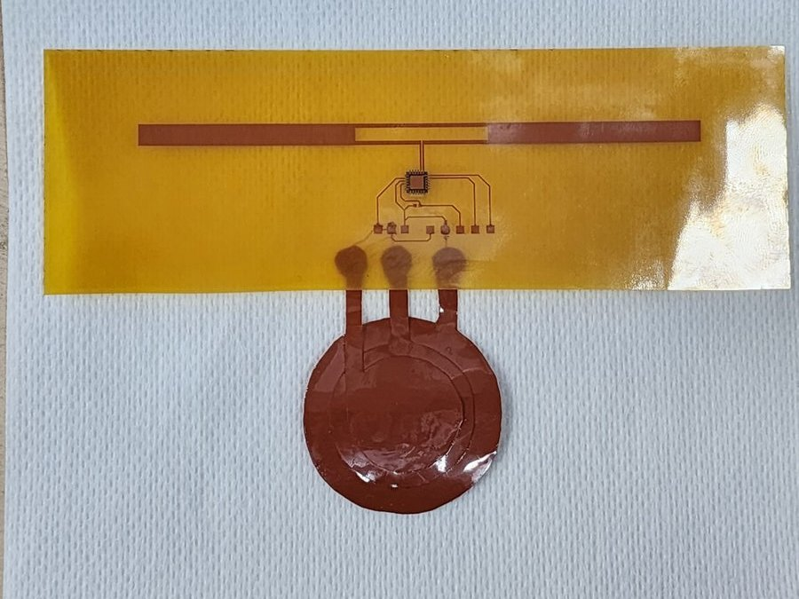
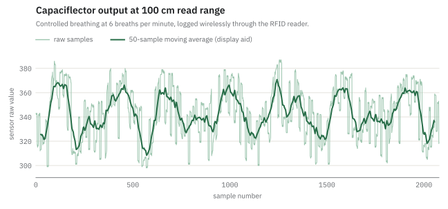

Wireless RFID E-Textile Breathing Sensor
First-class mark
ANSYS HFSSKiCadMultisimRFIDFlexible PCB
Designed a battery-free capacitive sensor (a capaciflector) that reads breathing through clothing and reports it over passive RFID. The RFID chip's datasheet only covered two-plate capacitors, so I worked out how to drive a three-electrode sensor from a single pin. Tested from 80 to 160 cm at a paced 6 breaths per minute, it gave the clearest breathing pattern at 100 cm.
Read more
- Team and my part: team of 5; I led the capaciflector sensor, end to end.
- Problem: continuous breathing monitoring outside intensive care, with no battery on the patient.
- What I did: simulated the sensing principle in Multisim; designed and simulated the antenna in ANSYS HFSS, including the effect of the human body; produced ten flexible-PCB variants in KiCad and fixed manufacturing-rule violations; assembled the tags by hand.
- Interface from first principles: routed the ground plane to the sensing pin so the chip drove both reflector and sensor electrodes. This went into the final design.
- When fabrication failed: screen-printed sensors shorted from air bubbles in the dielectric, twice. I switched to Kapton–copper clad, which worked reliably.
- Debugging: long wires made the data noisy; a compact version lost read range from antenna coupling; a smaller sensor geometry fixed both.
- Result: tested from 80 to 160 cm with breathing paced at 6 per minute by a metronome. The pattern was clear at 80–100 cm, still recognisable at 120 cm, and weaker beyond. 100 cm was the best compromise between patient comfort and signal, with an average peak-to-peak swing of 75 raw counts.
- What I'd change: test the fabrication route in week 1, not week 7.
